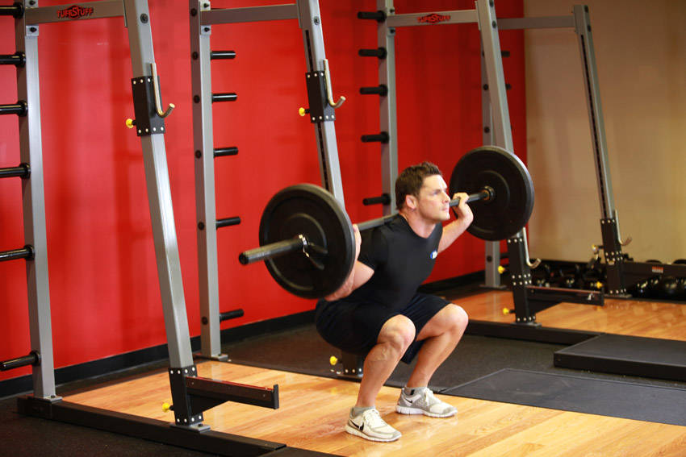
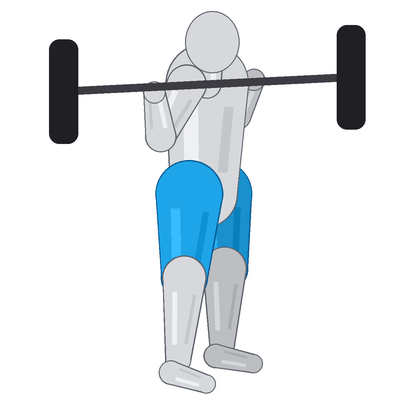
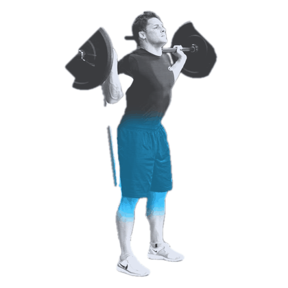
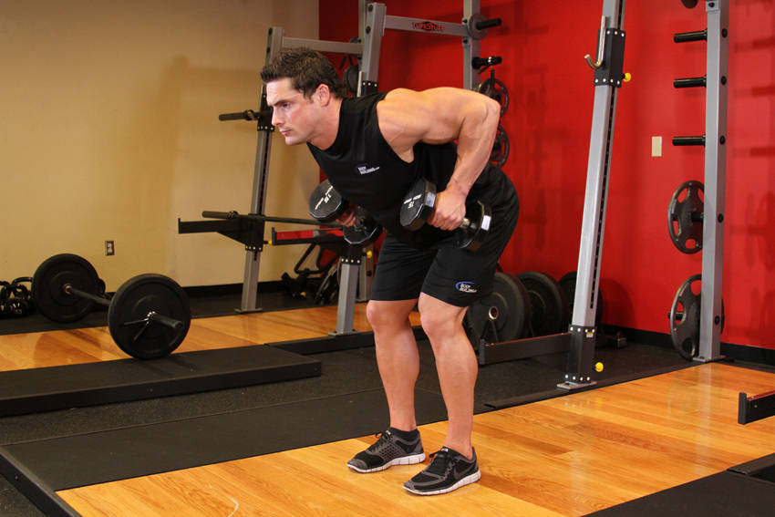
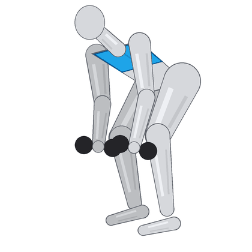
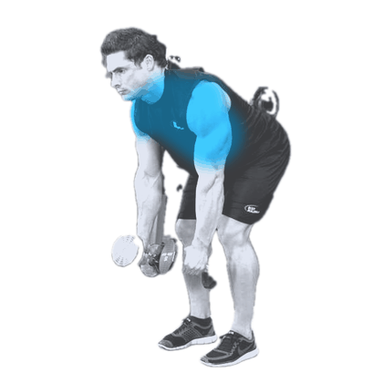
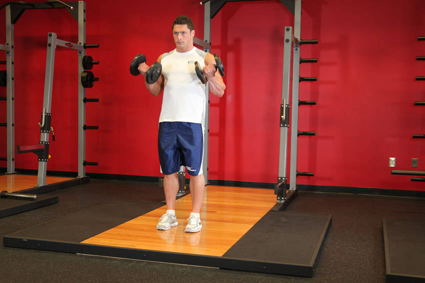
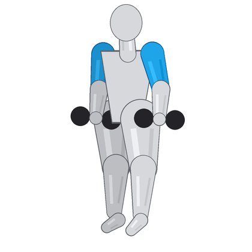
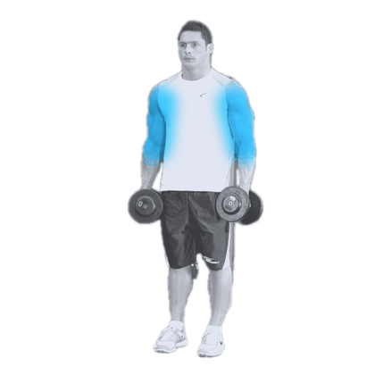

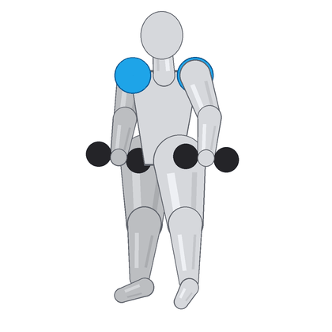
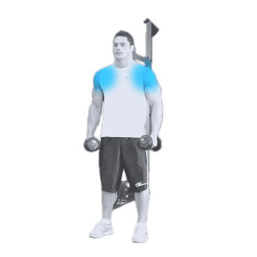
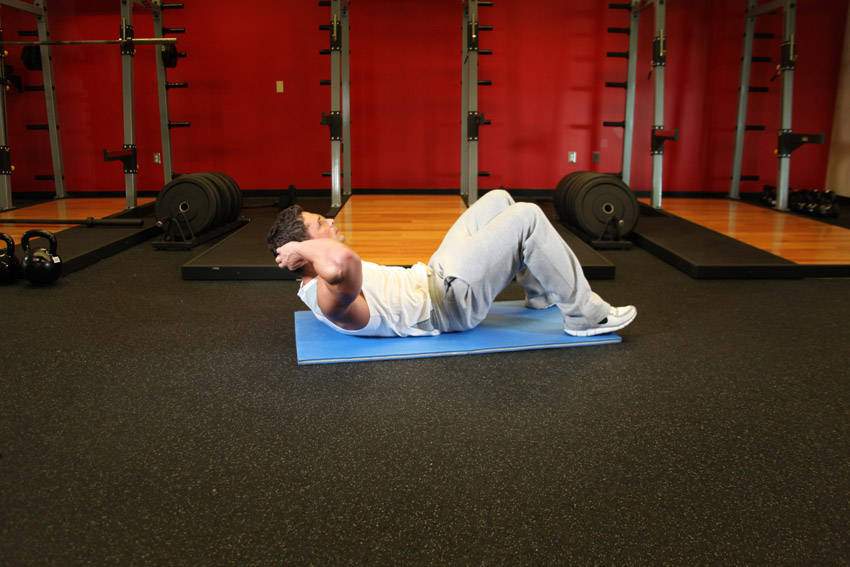
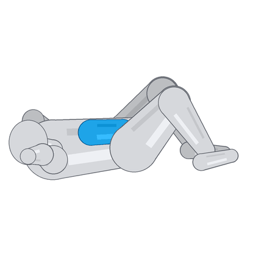
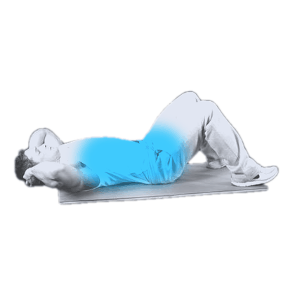
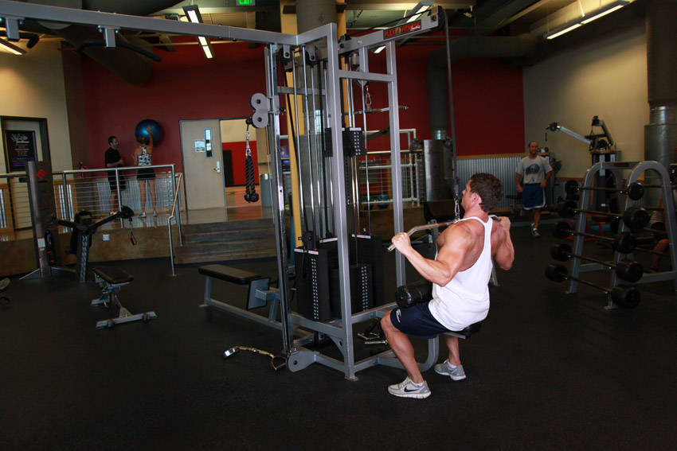
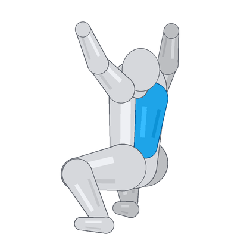
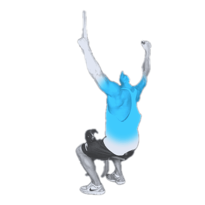
A = current photos · B = drawn mannequin · C = grey statue. All free and original/public-domain.
| A. Current photos | B. Drawn mannequin | C. Grey statue | |
|---|---|---|---|
| Barbell Squat |  |  |  |
| Bent-Over Dumbbell Row |  |  |  |
| Dumbbell Bicep Curl |  |  |  |
| Side Lateral Raise | |  |  |
| Crunches |  |  |  |
| Lat Pulldown |  |  |  |